Trường ĐH Công nghệ – Đại học Quốc gia Hà Nội
Mô hình tuyến tính tiêu chuẩn:
\[ Y = \beta_0 + \beta_1 X_1 + \cdots + \beta_p X_p + \varepsilon \]
Mô hình tuyến tính tiêu chuẩn:
\[ y_i = \beta_0 + \beta_1 x_i + \varepsilon_i \]
Hồi quy đa thức bậc \(d\):
\[ y_i = \beta_0 + \beta_1 x_i + \beta_2 x_i^2 + \cdots + \beta_d x_i^d + \varepsilon \]
Mô hình vẫn tuyến tính theo các hệ số \(\beta_i\)
\[ y_i = \beta_0 + \beta_1 x_i + \beta_2 x_i^2 + \cdots + \beta_d x_i^d + \varepsilon \]
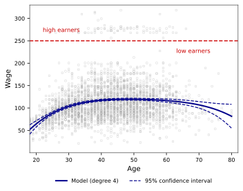
Dữ liệu Wage — đa thức bậc 4
Dùng hồi quy logistic đa thức:
\[ \Pr(y_i > 250 \mid x_i) = \frac{e^{\beta_0 + \beta_1 x_i + \cdots + \beta_d x_i^d}}{1 + e^{\beta_0 + \beta_1 x_i + \cdots + \beta_d x_i^d}} \]
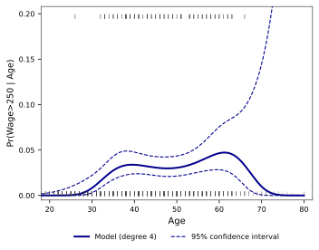
250|Age)" style="max-width:100%;" />Dữ liệu Wage — logistic bậc 4
Chuyển biến liên tục → biến chỉ thị rời rạc:
Mô hình hồi quy:
\[ y_i = \beta_0 + \beta_1 C_1(x_i) + \beta_2 C_2(x_i) + \cdots + \beta_K C_K(x_i) + \varepsilon_i \]
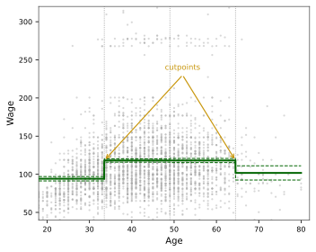
Dữ liệu Wage — Hồi quy
Mô hình logistic:
\[ \Pr(y_i > 250 \mid x_i) = \frac{\exp(\beta_0 + \sum_{k=1}^{K}\beta_k C_k(x_i))}{1 + \exp(\beta_0 + \sum_{k=1}^{K}\beta_k C_k(x_i))} \]
⚠️ Điểm cắt phải đặt đúng chỗ có biến động — nếu không mô hình sẽ bỏ sót xu hướng quan trọng!
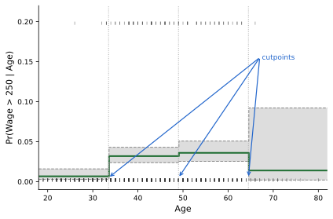
Dữ liệu Wage — Phân lớp
Ý chính: cần thêm ràng buộc tại nút để được spline.
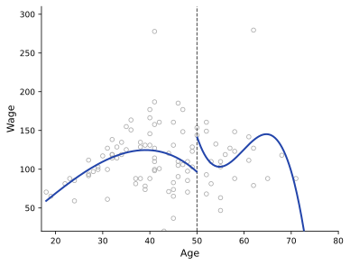
Linh hoạt, nhưng chưa mượt tại nút
Cubic spline: tại mỗi nút \(\zeta\), yêu cầu
\[ f_-(\zeta)=f_+(\zeta),\quad f'_-(\zeta)=f'_+(\zeta),\quad f''_-(\zeta)=f''_+(\zeta) \]
Kết quả: đường cong trơn, không gãy tại điểm nối.
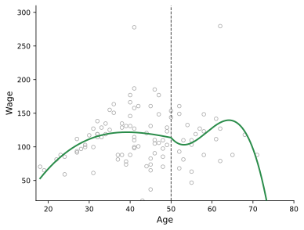
Spline nối mượt các đoạn đa thức
Ý chính: cubic spline cho cân bằng tốt giữa linh hoạt và độ trơn.
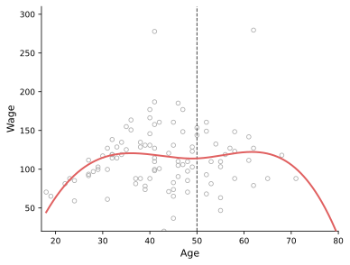
Cubic spline với một nút
Kết luận: cubic spline với \(K\) nút có \(K+4\) bậc tự do.
Với spline bậc \(d\) có \(K\) nút:
\[ \dim = \mathrm{dof} = d + K + 1 \]
Ý nghĩa: số nút và bậc spline cùng quyết định độ linh hoạt của mô hình.
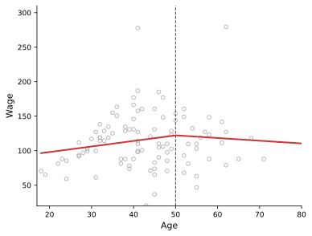
Spline bậc 1: ít linh hoạt hơn cubic spline
Cubic spline với \(K\) nút có \(K+4\) bậc tự do, nên cần \(K+4\) hàm cơ sở.
\[ 1,\ X,\ X^2,\ X^3,\ (X-\zeta_1)_+^3,\ldots,(X-\zeta_K)_+^3 \]
Dùng cơ sở này để khớp hồi quy tuyến tính sẽ cho ra cubic spline với các nút \(\zeta_1,\ldots,\zeta_K\).
Ý nghĩa: mọi cubic spline với \(K\) nút đều là tổ hợp tuyến tính của các hàm trên.
Hệ quả: fit spline = fit hồi quy tuyến tính trên các basis functions.
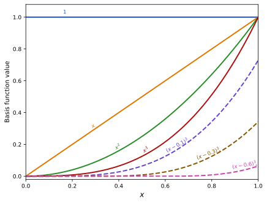
Câu hỏi: làm sao giữ được độ linh hoạt ở giữa nhưng ổn định hơn ở biên?
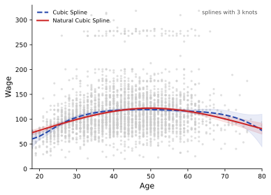
Cubic spline thường kém ổn định hơn ở vùng biên
Kết quả: mô hình ổn định hơn ở vùng biên mà vẫn đủ linh hoạt ở giữa.
Natural spline ổn định hơn ở hai đầu biên
Đánh đổi: tăng một chút độ lệch, nhưng thường có lợi trong thực tế.
Với \(K\) nút, spline tự nhiên bậc ba có \(K\) bậc tự do.
\[ N_1(X)=1,\qquad N_2(X)=X \]
\[ N_{k+2}(X)=d_k(X)-d_{K-1}(X),\qquad k=1,\ldots,K-2 \]
trong đó \[ d_k(X)=\frac{(X-\zeta_k)_+^3-(X-\zeta_K)_+^3}{\zeta_K-\zeta_k} \]
Ý nghĩa: các basis này đã “cài sẵn” ràng buộc tuyến tính ở biên.
Hệ quả: fit natural spline = fit hồi quy tuyến tính trên các basis functions.
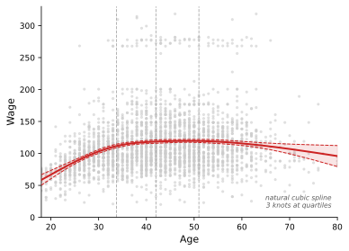
Hồi quy — 3 nút tại phân vị
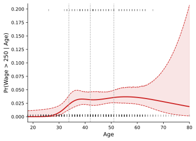
Phân lớp — 3 nút tại phân vị
Thực tế: đặt nút theo phân vị thường là lựa chọn an toàn.
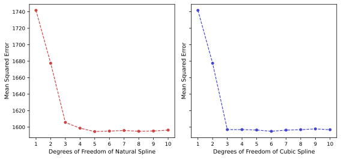
Chọn bậc tự do bằng cross-validation
Hạn chế còn lại: vẫn phải chọn số lượng và vị trí của các nút.
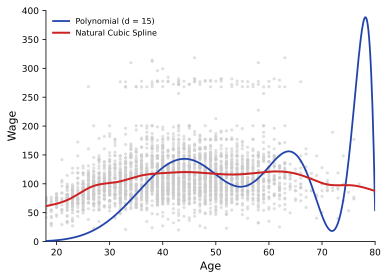
Spline tự nhiên ổn định hơn đa thức bậc cao
Ý tưởng: không chọn nút thủ công; thay vào đó, điều khiển độ trơn bằng một tham số \(\lambda\).
Hàm mục tiêu:
\[ \sum_{i=1}^{n}(y_i - g(x_i))^2 + \lambda \int g''(t)^2\,dt \]
\[ \min_g \; \sum_{i=1}^{n}(y_i - g(x_i))^2 + \lambda \int g''(t)^2\, dt \]
Kết quả quan trọng: nghiệm tối ưu là một spline tự nhiên bậc ba với nút tại tất cả các điểm dữ liệu.
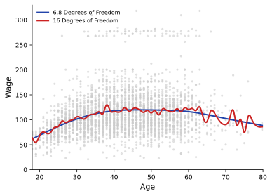
\(\lambda\) khác nhau cho mức độ trơn khác nhau
Với smoothing spline, dự đoán là một hàm tuyến tính của \(\mathbf{y}\): \( \hat{\mathbf{g}}_\lambda = \mathbf{S}_\lambda \mathbf{y} \)
Bậc tự do hiệu dụng: \( \mathrm{dof}(\lambda)=\mathrm{tr}(\mathbf{S}_\lambda) \)
Chọn \(\lambda\) bằng LOOCV: \( \mathrm{CV}(\lambda)=\sum_{i=1}^{n} \left(\frac{y_i-\hat g_\lambda(x_i)}{1-\{S_\lambda\}_{ii}}\right)^2 \)
Ý chính: thay vì chọn số nút, ta chọn \(\lambda\) để điều khiển độ trơn.
Có thể hiểu như một phiên bản làm mượt của k-NN regression:
\[ \hat f(x_0)=\hat\beta_0(x_0)+\hat\beta_1(x_0)x_0 \]
Mỗi điểm \(x_0\) có một mô hình riêng.
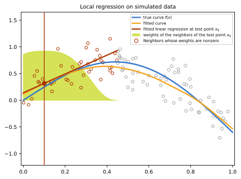
Xám: toàn bộ dữ liệu | Cam: điểm trong lân cận \(x_0\) | Vàng: trọng số kernel
Có thể hiểu như một phiên bản làm mượt của k-NN regression:
\[ \hat f(x_0)=\hat\beta_0(x_0)+\hat\beta_1(x_0)x_0 \]
Mỗi điểm \(x_0\) có một mô hình riêng.
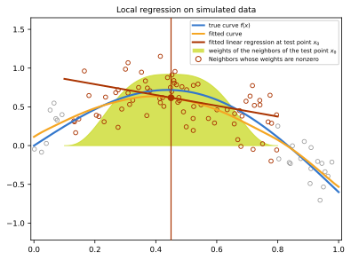
Xám: toàn bộ dữ liệu | Cam: điểm trong lân cận \(x_0\) | Vàng: trọng số kernel
Tại mỗi điểm cần dự đoán \(x_0\), ta khớp một mô hình cục bộ bằng bình phương tối thiểu có trọng số:
\[ (\hat\beta_0(x_0),\hat\beta_1(x_0)) = \arg\min_{\beta_0,\beta_1} \sum_{i=1}^n w_i(x_0)\big(y_i-\beta_0-\beta_1x_i\big)^2 \]
\[ \hat f(x_0)=\hat\beta_0(x_0)+\hat\beta_1(x_0)x_0 \]
Để fit mô hình cục bộ, ta gán cho mỗi điểm \(x_i\) một trọng số phụ thuộc vào khoảng cách đến \(x_0\):
\[ w_i(x_0)=K_h(x_i,x_0) \]
Một cách phổ biến để định nghĩa trọng số là dùng hàm kernel:
\[ K_h(x_0,x)=D\!\left(\frac{|x-x_0|}{h}\right) \]
Ví dụ: tri-cube
\[ D(t)= \begin{cases} (1-|t|^3)^3 & |t|\le 1\\ 0 & \text{otherwise} \end{cases} \]
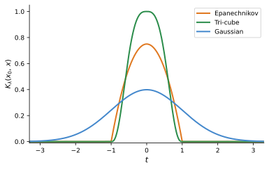
Băng thông \(h\) quyết định độ rộng của vùng lân cận quanh \(x_0\).
\(h\) lớn \(\Rightarrow\) vùng lân cận rộng hơn \(\Rightarrow\) bias cao hơn, variance thấp hơn.
Metric kernel — băng thông cố định \(h\)
Nearest-neighbor kernel — chọn \(h(x_0)\) theo điểm lân cận thứ \(k\)
Có thể mở rộng sang đa thức bậc cao hơn hoặc nhiều biến, nhưng khi số chiều tăng thì dữ liệu trở nên thưa hơn.
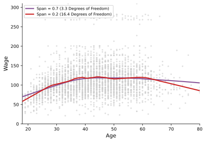
Span = tỉ lệ dữ liệu dùng cho mỗi dự đoán
Mở rộng mô hình tuyến tính: thay thế từng \(\beta_j X_j\) bằng hàm phi tuyến \(f_j(X_j)\):
\[ y_i = \beta_0 + \sum_{j=1}^{p} f_j(x_{ij}) + \varepsilon_i \]
Ví dụ trên dữ liệu Wage:
\[ \text{wage} = \beta_0 + f_1(\text{year}) + f_2(\text{age}) + f_3(\text{education}) + \varepsilon \]
với \(f_1\): natural spline 4 dof, \(f_2\): natural spline 5 dof, \(f_3\): hàm bậc thang theo trình độ học vấn.
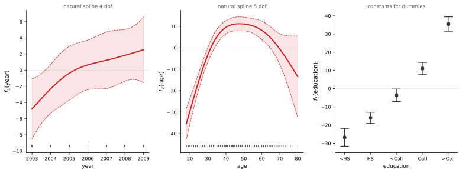
Natural spline — bậc tự do xác định trước. Ảnh hưởng riêng phần từng biến, giữ nguyên các biến còn lại. Vùng tô là CI 95%.
Ước lượng lặp từng hàm \(f_j\) bằng cách cố định các hàm còn lại.
\(\mathcal{S}_j\): bất kỳ toán tử làm mượt tuyến tính — spline tự nhiên, smoothing spline, hồi quy cục bộ, …
Với nhiều bộ làm mượt tuyến tính, backfitting tương đương với thuật toán Gauss–Seidel để giải hệ phương trình tuyến tính.
Ưu điểm
Nhược điểm
Logistic tuyến tính
\[ \log\frac{p}{1-p} = \beta_0 + \beta_1 X_1 + \beta_2 X_2 + \cdots + \beta_p X_p \]Logistic GAM — thay \(\beta_j X_j\) bằng hàm phi tuyến \(f_j(X_j)\)
\[ \log\frac{p}{1-p} = \beta_0 + f_1(X_1) + f_2(X_2) + \cdots + f_p(X_p) \]Mỗi \(f_j\) có thể là spline, hồi quy cục bộ, hay một bộ làm mượt khác.
\(\log \frac{p}{1-p} = \beta_0 + \beta_1\,\text{year} + f_2(\text{age}) + f_3(\text{education})\)
year tuyến tính, age: spline tự nhiên 5 dof
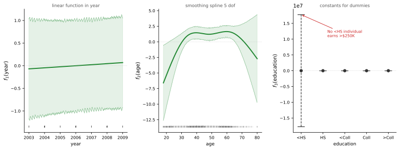
Nhóm <HS không có ai có lương >250K → ước lượng phân ly hoàn toàn, CI cực rộng.
Loại bỏ nhóm <HS và fit lại:
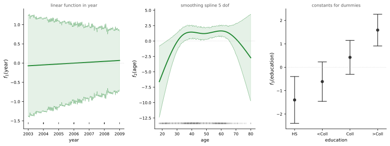
CI thu hẹp lại. Tuổi trung niên và học vấn cao dự đoán xác suất lương >250K cao hơn.
| Phương pháp | Linh hoạt | Trơn | Tham số | Lưu ý |
|---|---|---|---|---|
| Hồi quy đa thức | Vừa | ✓ | Bậc \(d\) | Đuôi lượn mạnh; \(d \le 4\) thường đủ |
| Hàm bậc thang | Thấp | ✗ | Số vùng \(K\) | Phụ thuộc vị trí điểm cắt |
| Spline bậc ba | Cao | ✓ | Số nút \(K\) | Phương sai cao ở biên; dof = \(K+4\) |
| Spline tự nhiên bậc ba | Cao | ✓✓ | Số nút \(K\) | Tuyến tính ở biên; dof = \(K\) |
| Spline làm mượt | Rất cao | ✓✓ | \(\lambda\) | Nút tại mọi điểm dữ liệu; chọn \(\lambda\) bằng CV |
| Hồi quy cục bộ | Rất cao | ✓✓ | Băng thông | Vùng lân cận chồng nhau; kém hiệu quả khi số chiều tăng |
| GAM | Cao | ✓✓ | Theo từng \(f_j\) | Nhiều đầu vào; cộng tính; bỏ qua tương tác |
Thực tế: Dùng kiểm định chéo để chọn phương pháp và tham số.